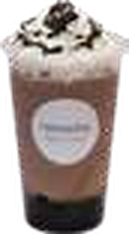
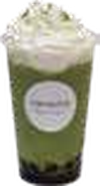
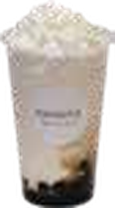
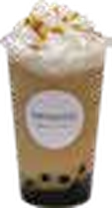

tapioca frappe
タピオカフラッペ
ひんやり濃厚なデザート感覚のタピオカドリンク。オレオ、抹茶、黒ごま、バナナなど甘い一杯を楽しみたい方におすすめです。

濃厚黒ごまチーズタピオカフラッペ
濃厚黒ごまと特製チーズフォームを合わせたリッチな一杯。

キャラメルタピオカフラッペ
高品質エスプレッソ、キャラメルソース、厳選ミルクの芳醇な味わい。
バニラタピオカフラッペ
バニラフレーバー、厳選ミルク、国産練乳を使ったまろやかな一杯。
チョコミントタピオカフラッペ
ダークチョコとミントの爽快感。プレミアム版への変更もおすすめ。
オレオタピオカフラッペ
砕いたオレオともっちりタピオカを合わせた人気フラッペ。

バナナタピオカフラッペ
丸ごと冷凍したバナナと黒糖タピオカの相性が抜群。

チョコタピオカフラッペ
ダークチョコとココアで、飲みやすさとチョコ感を両立。
抹茶タピオカフラッペ
八女産抹茶をたっぷり使用。ミルキーで抹茶感のある一杯。